Section 5.2 — Bayesian inference computations#
This notebook contains the code examples from Section 5.2 Bayesian inference computations from the No Bullshit Guide to Statistics.
See also:
Notebook setup#
# load Python modules
import os
import numpy as np
import pandas as pd
import seaborn as sns
import matplotlib.pyplot as plt
# Figures setup
plt.clf() # needed otherwise `sns.set_theme` doesn"t work
from plot_helpers import RCPARAMS
RCPARAMS.update({"figure.figsize": (5, 3)}) # good for screen
# RCPARAMS.update({"figure.figsize": (5, 2)}) # good for print
sns.set_theme(
context="paper",
style="whitegrid",
palette="colorblind",
rc=RCPARAMS,
)
# High-resolution please
%config InlineBackend.figure_format = "retina"
# Where to store figures
from ministats.utils import savefigure
DESTDIR = "figures/bayes/computations"
#######################################################
<Figure size 640x480 with 0 Axes>
Definitions#
TODO
Posterior inference using MCMC estimation#
TODO: point-form definitions
Bayesian inference using Bambi#
TODO: mention Bambi classes
import bambi as bmb
WARNING (pytensor.tensor.blas): Using NumPy C-API based implementation for BLAS functions.
print(bmb.Prior.__doc__)
Abstract specification of a term prior
Parameters
----------
name : str
Name of prior distribution. Must be the name of a PyMC distribution
(e.g., `"Normal"`, `"Bernoulli"`, etc.)
auto_scale: bool
Whether to adjust the parameters of the prior or use them as passed. Default to `True`.
kwargs : dict
Optional keywords specifying the parameters of the named distribution.
dist : pymc.distributions.distribution.DistributionMeta or callable
A callable that returns a valid PyMC distribution. The signature must contain `name`,
`dims`, and `shape`, as well as its own keyworded arguments.
print("\n".join(bmb.Model.__doc__.splitlines()[0:27]))
Specification of model class
Parameters
----------
formula : str or bambi.formula.Formula
A model description written using the formula syntax from the `formulae` library.
data : pandas.DataFrame
A pandas dataframe containing the data on which the model will be fit, with column
names matching variables defined in the formula.
family : str or bambi.families.Family
A specification of the model family (analogous to the family object in R). Either
a string, or an instance of class `bambi.families.Family`. If a string is passed, a
family with the corresponding name must be defined in the defaults loaded at `Model`
initialization. Valid pre-defined families are `"bernoulli"`, `"beta"`,
`"binomial"`, `"categorical"`, `"gamma"`, `"gaussian"`, `"negativebinomial"`,
`"poisson"`, `"t"`, and `"wald"`. Defaults to `"gaussian"`.
priors : dict
Optional specification of priors for one or more terms. A dictionary where the keys are
the names of terms in the model, "common," or "group_specific" and the values are
instances of class `Prior`. If priors are unset, uses automatic priors inspired by
the R rstanarm library.
link : str or Dict[str, str]
The name of the link function to use. Valid names are `"cloglog"`, `"identity"`,
`"inverse_squared"`, `"inverse"`, `"log"`, `"logit"`, `"probit"`, and
`"softmax"`. Not all the link functions can be used with all the families.
If a dictionary, keys are the names of the target parameters and the values are the names
of the link functions.
Example 1: estimating the probability of a bias of a coin#
Let’s revisit the biased coin example from Section 5.1, where we want to estimate the probability the coin turns up heads.
Data#
We have a sample that contains \(n=50\) observations (coin tosses) from the coin.
The outcome 1 corresponds to heads,
while the outcome 0 corresponds to tails.
We package the data as the ctoss column of a new data frame ctosses.
ctosses = [1,1,0,0,1,0,1,1,1,1,1,0,1,1,0,0,0,1,1,1,
1,1,1,1,1,1,1,0,1,1,1,1,1,1,1,1,0,0,1,0,
0,1,0,1,0,1,0,1,1,0]
ctosses = pd.DataFrame({"ctoss":ctosses})
ctosses.head(3)
| ctoss | |
|---|---|
| 0 | 1 |
| 1 | 1 |
| 2 | 0 |
The proportion of heads outcomes is:
ctosses["ctoss"].mean()
0.68
Model#
The model is
import bambi as bmb
bmb.Prior("Uniform", lower=0, upper=1)
Uniform(lower: 0.0, upper: 1.0)
priors1 = {
"Intercept": bmb.Prior("Uniform", lower=0, upper=1)
# "Intercept": bmb.Prior("Beta", alpha=1, beta=1),
}
mod1 = bmb.Model(formula="ctoss ~ 1",
family="bernoulli",
link="identity",
priors=priors1,
data=ctosses)
mod1.set_alias({"Intercept": "P"})
mod1
Formula: ctoss ~ 1
Family: bernoulli
Link: p = identity
Observations: 50
Priors:
target = p
Common-level effects
Intercept ~ Uniform(lower: 0.0, upper: 1.0)
mod1.build()
mod1.graph()
# # FIGURES ONLY
# filename = os.path.join(DESTDIR, "example1_mod1_graph")
# mod1.graph(name=filename, fmt="png", dpi=300)

Fitting the model#
idata1 = mod1.fit(random_seed=[42,42,44,45])
Modeling the probability that ctoss==1
Auto-assigning NUTS sampler...
Initializing NUTS using jitter+adapt_diag...
Multiprocess sampling (2 chains in 2 jobs)
NUTS: [P]
Sampling 2 chains for 1_000 tune and 1_000 draw iterations (2_000 + 2_000 draws total) took 1 seconds.
We recommend running at least 4 chains for robust computation of convergence diagnostics
Exploring InferenceData objects#
idata1
-
<xarray.Dataset> Size: 24kB Dimensions: (chain: 2, draw: 1000) Coordinates: * chain (chain) int64 16B 0 1 * draw (draw) int64 8kB 0 1 2 3 4 5 6 7 ... 993 994 995 996 997 998 999 Data variables: P (chain, draw) float64 16kB 0.7634 0.7506 0.7648 ... 0.6584 0.6406 Attributes: created_at: 2024-11-23T01:40:19.347823+00:00 arviz_version: 0.20.0 inference_library: pymc inference_library_version: 5.18.2 sampling_time: 1.3311305046081543 tuning_steps: 1000 modeling_interface: bambi modeling_interface_version: 0.14.1.dev12+g3a30784 -
<xarray.Dataset> Size: 252kB Dimensions: (chain: 2, draw: 1000) Coordinates: * chain (chain) int64 16B 0 1 * draw (draw) int64 8kB 0 1 2 3 4 5 ... 995 996 997 998 999 Data variables: (12/17) acceptance_rate (chain, draw) float64 16kB 1.0 1.0 ... 1.0 0.9536 smallest_eigval (chain, draw) float64 16kB nan nan nan ... nan nan reached_max_treedepth (chain, draw) bool 2kB False False ... False False energy (chain, draw) float64 16kB 34.67 34.1 ... 32.99 33.0 lp (chain, draw) float64 16kB -33.95 -33.65 ... -32.98 step_size (chain, draw) float64 16kB 1.183 1.183 ... 1.146 ... ... index_in_trajectory (chain, draw) int64 16kB 1 -1 -1 -3 -3 ... 1 -1 1 1 1 step_size_bar (chain, draw) float64 16kB 1.292 1.292 ... 1.361 tree_depth (chain, draw) int64 16kB 1 1 1 2 2 1 ... 1 1 1 1 1 1 n_steps (chain, draw) float64 16kB 1.0 1.0 1.0 ... 1.0 1.0 process_time_diff (chain, draw) float64 16kB 0.0002065 ... 0.0001987 max_energy_error (chain, draw) float64 16kB -0.1996 -0.1032 ... 0.0475 Attributes: created_at: 2024-11-23T01:40:19.361246+00:00 arviz_version: 0.20.0 inference_library: pymc inference_library_version: 5.18.2 sampling_time: 1.3311305046081543 tuning_steps: 1000 modeling_interface: bambi modeling_interface_version: 0.14.1.dev12+g3a30784 -
<xarray.Dataset> Size: 800B Dimensions: (__obs__: 50) Coordinates: * __obs__ (__obs__) int64 400B 0 1 2 3 4 5 6 7 8 ... 42 43 44 45 46 47 48 49 Data variables: ctoss (__obs__) int64 400B 1 1 0 0 1 0 1 1 1 1 1 ... 0 1 0 1 0 1 0 1 1 0 Attributes: created_at: 2024-11-23T01:40:19.366988+00:00 arviz_version: 0.20.0 inference_library: pymc inference_library_version: 5.18.2 modeling_interface: bambi modeling_interface_version: 0.14.1.dev12+g3a30784
type(idata1)
arviz.data.inference_data.InferenceData
idata1.groups()
['posterior', 'sample_stats', 'observed_data']
type(idata1["posterior"])
xarray.core.dataset.Dataset
list(idata1["posterior"].variables)
['chain', 'draw', 'P']
type(idata1["posterior"]["P"])
xarray.core.dataarray.DataArray
idata1["posterior"]["P"].values.round(3)
array([[0.763, 0.751, 0.765, ..., 0.634, 0.619, 0.626],
[0.683, 0.734, 0.743, ..., 0.63 , 0.658, 0.641]])
idata1["posterior"]["P"].values.shape
(2, 1000)
idata1.to_dataframe(groups=["posterior"]).head(3)
| chain | draw | P | |
|---|---|---|---|
| 0 | 0 | 0 | 0.763386 |
| 1 | 0 | 1 | 0.750632 |
| 2 | 0 | 2 | 0.764847 |
Extracting the samples from the posterior#
postP = idata1["posterior"]["P"].values.flatten()
postP
array([0.7633857 , 0.75063231, 0.76484667, ..., 0.63036481, 0.65844829,
0.64060878])
Visualize the posterior#
Histogram#
ax = sns.histplot(x=postP, stat="density")
ax.set_xlabel("$p$")
ax.set_ylabel("$f_{P|\\mathbf{c}}$");
{kind=link}
Kernel density plot#
ax = sns.kdeplot(x=postP)
ax.set_xlabel("$p$")
ax.set_ylabel("$f_{P|\\mathbf{c}}$");
{kind=link}
# FIGURES ONLY
with plt.rc_context({"figure.figsize":(5.7,2)}):
fig, axs = plt.subplots(1, 2, sharey=True)
sns.histplot(x=postP, stat="density", ax=axs[0])
axs[0].set_xlabel("$p$")
axs[0].set_ylabel("$f_{P|\\mathbf{c}}$");
axs[0].set_title("(a) Historgram of the posterior density")
sns.kdeplot(x=postP, ax=axs[1])
axs[1].set_xlabel("$p$")
axs[1].set_title("(b) Kernel density plot of the posterior")
filename = os.path.join(DESTDIR, "example1_histplot_and_kdeplot_postP.pdf")
savefigure(plt.gcf(), filename)
Saved figure to figures/bayes/computations/example1_histplot_and_kdeplot_postP.pdf
Saved figure to figures/bayes/computations/example1_histplot_and_kdeplot_postP.png
{kind=link}
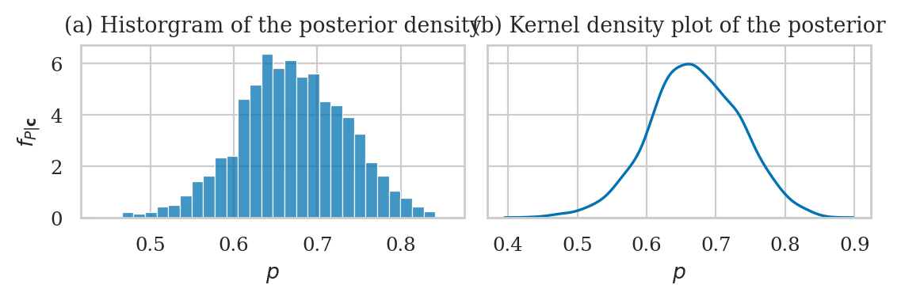
Summarize the posterior#
len(postP)
2000
Posterior mean#
np.mean(postP)
0.6698774872522933
Posterior standard deviation#
np.std(postP)
0.06495119552251154
Posterior median#
np.median(postP)
0.6680783051716108
Posterior quartiles#
np.quantile(postP, [0.25, 0.5, 0.75])
array([0.62719629, 0.66807831, 0.71534978])
Posterior percentiles#
np.percentile(postP, [3, 97])
array([0.54540918, 0.78891626])
Posterior mode#
# 1. Fit a Gaussian KDE curve approx. to the posterior samples `postP`
from scipy.stats import gaussian_kde
postP_kde = gaussian_kde(postP)
# 2. Find the max of the KDE curve
ps = np.linspace(0, 1, 10001)
densityP = postP_kde(ps)
ps[np.argmax(densityP)]
0.6606000000000001
Credible interval#
from ministats.hpdi import hpdi_from_samples
hpdi_from_samples(postP, hdi_prob=0.9)
[0.5604675011743476, 0.7731044659505846]
Example 2: estimating the IQ score#
Let’s return to the investigation of the smart drug effects on IQ scores.
Data#
We have collected data from \(30\) individuals who took the smart drug,
which we have packaged into the iq column of the data frame iqs.
iqs = [ 82.6, 105.5, 96.7, 84.0, 127.2, 98.8, 94.3,
122.1, 86.8, 86.1, 107.9, 118.9, 116.5, 101.0,
91.0, 130.0, 155.7, 120.8, 107.9, 117.1, 100.1,
108.2, 99.8, 103.6, 108.1, 110.3, 101.8, 131.7,
103.8, 116.4]
iqs = pd.DataFrame({"iq":iqs})
iqs["iq"].mean()
107.82333333333334
Model#
We will use the following Bayesian model:
We place a broad prior on the mean parameter \(M\), by choosing a large value for the standard deviation \(\sigma_M\). We assume the IQ scores come from a population with standard deviation \(\sigma = 15\).
import bambi as bmb
priors2 = {
"Intercept": bmb.Prior("Normal", mu=100, sigma=40),
# "sigma": bmb.Prior("Data", value=15),
"sigma": 15, # CHANGE WHEN https://github.com/bambinos/bambi/pull/851/files LANDS
}
mod2 = bmb.Model(formula="iq ~ 1",
family="gaussian",
link="identity",
priors=priors2,
data=iqs)
mod2.set_alias({"Intercept": "M"})
mod2
Formula: iq ~ 1
Family: gaussian
Link: mu = identity
Observations: 30
Priors:
target = mu
Common-level effects
Intercept ~ Normal(mu: 100.0, sigma: 40.0)
Auxiliary parameters
sigma ~ 15
mod2.build()
mod2.graph()
# # FIGURES ONLY
# filename = os.path.join(DESTDIR, "example2_mod2_graph")
# mod2.graph(name=filename, fmt="png", dpi=300)

This time we’ll generate \(N=2000\) samples from each chain.
idata2 = mod2.fit(draws=2000, random_seed=[42,43,44,45])
Auto-assigning NUTS sampler...
Initializing NUTS using jitter+adapt_diag...
Multiprocess sampling (2 chains in 2 jobs)
NUTS: [M]
Sampling 2 chains for 1_000 tune and 2_000 draw iterations (2_000 + 4_000 draws total) took 2 seconds.
We recommend running at least 4 chains for robust computation of convergence diagnostics
Extract the samples from the posterior#
postM = idata2["posterior"]["M"].values.flatten()
len(postM)
4000
postM
array([109.72320604, 108.77814301, 108.41518482, ..., 107.52298275,
106.01777732, 105.81768188])
Visualize the posterior#
Histogram#
ax = sns.histplot(x=postM, stat="density")
ax.set_xlabel("$\\mu$")
ax.set_ylabel("$f_{M|\\mathbf{x}}$");
{kind=link}
Kernel density plot#
ax = sns.kdeplot(x=postM)
ax.set_xlabel("$\\mu$")
ax.set_ylabel("$f_{M|\\mathbf{x}}$");
{kind=link}
# FIGURES ONLY
with plt.rc_context({"figure.figsize":(5.7,2)}):
fig, axs = plt.subplots(1, 2, sharey=True)
sns.histplot(x=postM, stat="density", ax=axs[0])
axs[0].set_xlabel("$\\mu$")
axs[0].set_ylabel("$f_{M|\\mathbf{x}}$");
axs[0].set_title("(a) Historgram of the posterior density")
sns.kdeplot(x=postM, ax=axs[1])
axs[1].set_xlabel("$\\mu$")
axs[1].set_title("(b) Kernel density plot of the posterior")
filename = os.path.join(DESTDIR, "example2_histplot_and_kdeplot_postM.pdf")
savefigure(plt.gcf(), filename)
Saved figure to figures/bayes/computations/example2_histplot_and_kdeplot_postM.pdf
Saved figure to figures/bayes/computations/example2_histplot_and_kdeplot_postM.png
{kind=link}
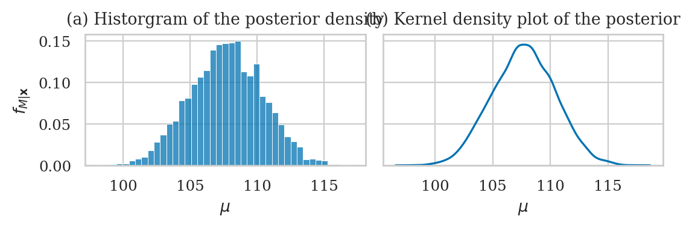
Summarize the posterior#
Posterior mean#
np.mean(postM)
107.68555012732162
Posterior standard deviation#
np.std(postM)
2.715147115131034
Posterior median#
np.median(postM)
107.6956094639927
Posterior quartiles#
np.quantile(postM, [0.25, 0.5, 0.75])
array([105.81412681, 107.69560946, 109.59119854])
Posterior percentiles#
np.percentile(postM, [3, 97])
array([102.60079979, 112.83716752])
Posterior mode#
# 1. Fit a Gaussian KDE curve approx. to the posterior samples `postM`
from scipy.stats import gaussian_kde
postM_kde = gaussian_kde(postM)
# 2. Find the max of the KDE curve
mus = np.linspace(0, 200, 10001)
densityM = postM_kde(mus)
mus[np.argmax(densityM)]
107.68
Credible interval#
from ministats.hpdi import hpdi_from_samples
hpdi_from_samples(postM, hdi_prob=0.9)
[103.29717965924321, 112.19424739605813]
Visualizing and interpreting posteriors#
import arviz as az
Example 1 continued: inferences about the biased coin#
Extracting samples (CUTTABLE)#
For the purpose of our data analysis,
we don’t care about the chain and draw information
and are only interested in in the variable P,
which are the actual samples from the posterior.
The easiest way to extract the samples from the posterior
is to use the ArviZ helper method az.extract shown below.
postP = az.extract(idata1, var_names="P").values
postP.round(3)
array([0.763, 0.751, 0.765, ..., 0.63 , 0.658, 0.641])
The call to the function az.extract selected the posterior group,
then selected the variable P within the posterior group.
/CUTTABLE
Summarizing the posterior#
az.summary(idata1, kind="stats", hdi_prob=0.9)
| mean | sd | hdi_5% | hdi_95% | |
|---|---|---|---|---|
| P | 0.67 | 0.065 | 0.56 | 0.773 |
az.summary(idata1, kind="stats", stat_focus="median")
| median | mad | eti_3% | eti_97% | |
|---|---|---|---|---|
| P | 0.668 | 0.044 | 0.545 | 0.789 |
Plotting the posterior#
az.plot_posterior(idata1, var_names="P", hdi_prob=0.9);
# FIGURES ONLY
filename = os.path.join(DESTDIR, "example1_arviz_plot_posterior.pdf")
savefigure(plt.gcf(), filename)
Saved figure to figures/bayes/computations/example1_arviz_plot_posterior.pdf
Saved figure to figures/bayes/computations/example1_arviz_plot_posterior.png
{kind=link}
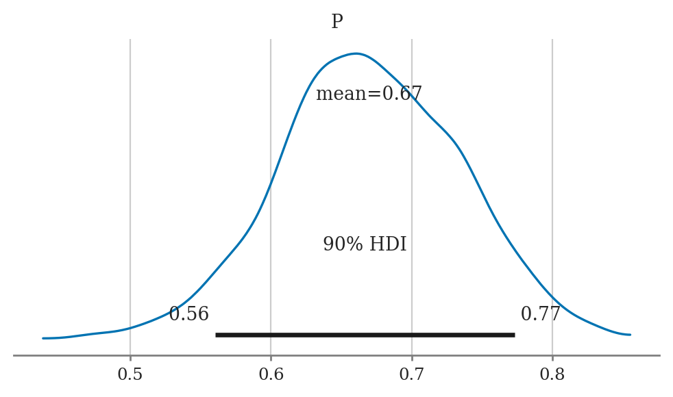
Options:
If multiple variables, you specify a list to
var_namesto select only certain variables to plotSet the option
point_estimateto"mode"or"median"Add the option
ropeto draw region of practical equivalence, e.g.,rope=[97,103]
az.plot_forest(idata1, hdi_prob=0.9);
{kind=link}
# FIGURES ONLY
az.plot_forest(idata1, hdi_prob=0.9, figsize=(6,2.2));
filename = os.path.join(DESTDIR, "example1_arviz_plot_forest.pdf")
savefigure(plt.gcf(), filename)
Saved figure to figures/bayes/computations/example1_arviz_plot_forest.pdf
Saved figure to figures/bayes/computations/example1_arviz_plot_forest.png
{kind=link}
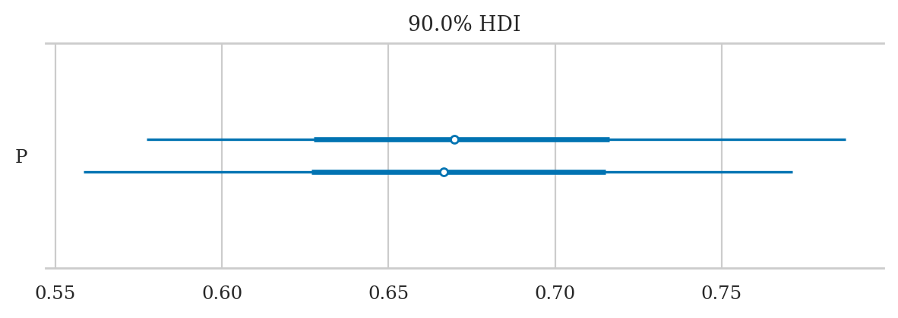
Example 2 continued: inferences about the population mean#
Summarizing the posterior#
az.summary(idata2, kind="stats", hdi_prob=0.9)
| mean | sd | hdi_5% | hdi_95% | |
|---|---|---|---|---|
| M | 107.686 | 2.715 | 103.297 | 112.194 |
print(az.summary(idata2, kind="stats", stat_focus="median"))
median mad eti_3% eti_97%
M 107.696 1.894 102.601 112.837
Plotting the posterior#
az.plot_posterior(idata2, var_names="M", hdi_prob=0.9);
# FIGURES ONLY
filename = os.path.join(DESTDIR, "example2_arviz_plot_posterior.pdf")
savefigure(plt.gcf(), filename)
Saved figure to figures/bayes/computations/example2_arviz_plot_posterior.pdf
Saved figure to figures/bayes/computations/example2_arviz_plot_posterior.png
{kind=link}
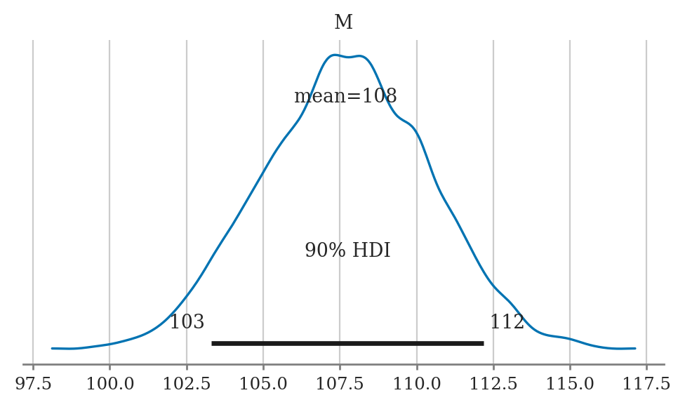
az.plot_forest(idata2, hdi_prob=0.9, combined=True, figsize=(6,1.5));
{kind=link}
# FIGURES ONLY
az.plot_forest(idata2, hdi_prob=0.9, combined=True, figsize=(6,1.3))
filename = os.path.join(DESTDIR, "example2_arviz_plot_forest.pdf")
savefigure(plt.gcf(), filename)
Saved figure to figures/bayes/computations/example2_arviz_plot_forest.pdf
Saved figure to figures/bayes/computations/example2_arviz_plot_forest.png
{kind=link}
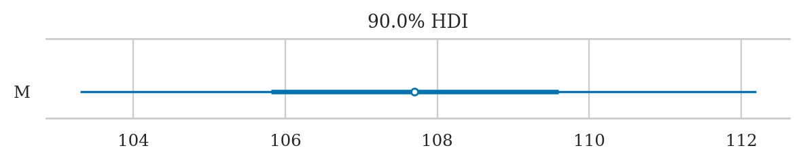
az.plot_forest(idata2, combined=True, hdi_prob=0.9, figsize=(6,0.6));
{kind=link}
# TODO: investigate further once predict bug fixed
# az.plot_ppc(idata2_pred)
Explanations#
Visualizing prior distributions#
mod2.plot_priors(random_seed=43);
Sampling: [M]
{kind=link}
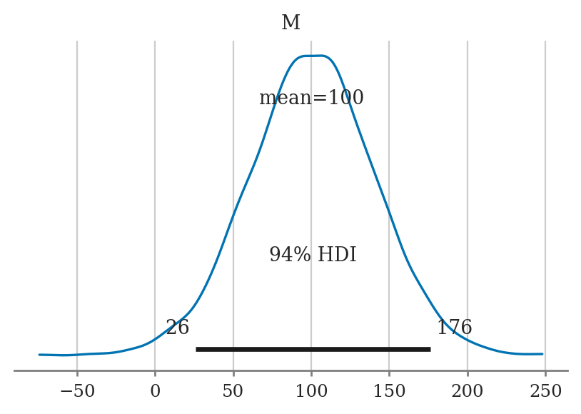
# FIGURES ONLY
with plt.rc_context({"figure.figsize":(5,1.5)}):
ax = mod2.plot_priors(random_seed=43)
ax.set_title(None)
# ax.set_xlabel("$\\mu$")
ax.set_xlabel(None)
ax.set_ylabel("$f_{M}$")
filename = os.path.join(DESTDIR, "example2_mod2_plot_priors.pdf")
savefigure(plt.gcf(), filename)
Sampling: [M]
Saved figure to figures/bayes/computations/example2_mod2_plot_priors.pdf
Saved figure to figures/bayes/computations/example2_mod2_plot_priors.png
{kind=link}
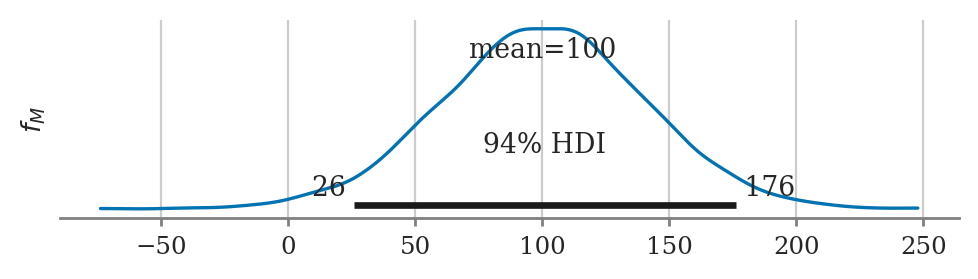
Bambi default priors#
iqs["iq"].mean(), iqs["iq"].std(ddof=0), 2.5*iqs["iq"].std(ddof=0)
(107.82333333333334, 15.812119472803834, 39.53029868200959)
mod2d = bmb.Model("iq ~ 1", family="gaussian", data=iqs)
mod2d
Formula: iq ~ 1
Family: gaussian
Link: mu = identity
Observations: 30
Priors:
target = mu
Common-level effects
Intercept ~ Normal(mu: 107.8233, sigma: 39.5303)
Auxiliary parameters
sigma ~ HalfStudentT(nu: 4.0, sigma: 15.8121)
mod2d.build()
mod2d.plot_priors();
Sampling: [Intercept, sigma]
{kind=link}
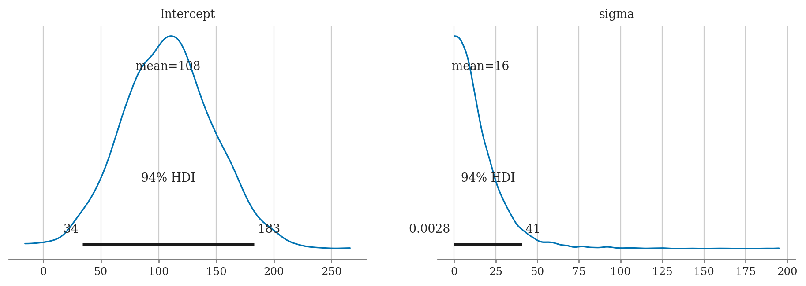
More about inference data objects#
idata1
-
<xarray.Dataset> Size: 24kB Dimensions: (chain: 2, draw: 1000) Coordinates: * chain (chain) int64 16B 0 1 * draw (draw) int64 8kB 0 1 2 3 4 5 6 7 ... 993 994 995 996 997 998 999 Data variables: P (chain, draw) float64 16kB 0.7634 0.7506 0.7648 ... 0.6584 0.6406 Attributes: created_at: 2024-11-23T01:40:19.347823+00:00 arviz_version: 0.20.0 inference_library: pymc inference_library_version: 5.18.2 sampling_time: 1.3311305046081543 tuning_steps: 1000 modeling_interface: bambi modeling_interface_version: 0.14.1.dev12+g3a30784 -
<xarray.Dataset> Size: 252kB Dimensions: (chain: 2, draw: 1000) Coordinates: * chain (chain) int64 16B 0 1 * draw (draw) int64 8kB 0 1 2 3 4 5 ... 995 996 997 998 999 Data variables: (12/17) acceptance_rate (chain, draw) float64 16kB 1.0 1.0 ... 1.0 0.9536 smallest_eigval (chain, draw) float64 16kB nan nan nan ... nan nan reached_max_treedepth (chain, draw) bool 2kB False False ... False False energy (chain, draw) float64 16kB 34.67 34.1 ... 32.99 33.0 lp (chain, draw) float64 16kB -33.95 -33.65 ... -32.98 step_size (chain, draw) float64 16kB 1.183 1.183 ... 1.146 ... ... index_in_trajectory (chain, draw) int64 16kB 1 -1 -1 -3 -3 ... 1 -1 1 1 1 step_size_bar (chain, draw) float64 16kB 1.292 1.292 ... 1.361 tree_depth (chain, draw) int64 16kB 1 1 1 2 2 1 ... 1 1 1 1 1 1 n_steps (chain, draw) float64 16kB 1.0 1.0 1.0 ... 1.0 1.0 process_time_diff (chain, draw) float64 16kB 0.0002065 ... 0.0001987 max_energy_error (chain, draw) float64 16kB -0.1996 -0.1032 ... 0.0475 Attributes: created_at: 2024-11-23T01:40:19.361246+00:00 arviz_version: 0.20.0 inference_library: pymc inference_library_version: 5.18.2 sampling_time: 1.3311305046081543 tuning_steps: 1000 modeling_interface: bambi modeling_interface_version: 0.14.1.dev12+g3a30784 -
<xarray.Dataset> Size: 800B Dimensions: (__obs__: 50) Coordinates: * __obs__ (__obs__) int64 400B 0 1 2 3 4 5 6 7 8 ... 42 43 44 45 46 47 48 49 Data variables: ctoss (__obs__) int64 400B 1 1 0 0 1 0 1 1 1 1 1 ... 0 1 0 1 0 1 0 1 1 0 Attributes: created_at: 2024-11-23T01:40:19.366988+00:00 arviz_version: 0.20.0 inference_library: pymc inference_library_version: 5.18.2 modeling_interface: bambi modeling_interface_version: 0.14.1.dev12+g3a30784
type(idata1)
arviz.data.inference_data.InferenceData
idata1.groups()
['posterior', 'sample_stats', 'observed_data']
Groups are Dataset objects#
post1 = idata1["posterior"]
type(post1)
xarray.core.dataset.Dataset
# post1
post1.coords
Coordinates:
* chain (chain) int64 16B 0 1
* draw (draw) int64 8kB 0 1 2 3 4 5 6 7 ... 993 994 995 996 997 998 999
post1.data_vars
Data variables:
P (chain, draw) float64 16kB 0.7634 0.7506 0.7648 ... 0.6584 0.6406
Variables are DataArray objects#
Ps = post1["P"] # == idata1["posterior"]["P"]
type(Ps)
xarray.core.dataarray.DataArray
# Ps
Ps.shape
(2, 1000)
Ps.name
'P'
Ps.to_dataframe()
| P | ||
|---|---|---|
| chain | draw | |
| 0 | 0 | 0.763386 |
| 1 | 0.750632 | |
| 2 | 0.764847 | |
| 3 | 0.693797 | |
| 4 | 0.737926 | |
| ... | ... | ... |
| 1 | 995 | 0.501951 |
| 996 | 0.569879 | |
| 997 | 0.630365 | |
| 998 | 0.658448 | |
| 999 | 0.640609 |
2000 rows × 1 columns
Ps.values
array([[0.7633857 , 0.75063231, 0.76484667, ..., 0.63406509, 0.61862731,
0.62594321],
[0.68252483, 0.7336341 , 0.74339606, ..., 0.63036481, 0.65844829,
0.64060878]])
Ps.values.flatten()
array([0.7633857 , 0.75063231, 0.76484667, ..., 0.63036481, 0.65844829,
0.64060878])
MCMC diagnostics#
MCMC diagnostic plots#
There are several Arviz plots we can use to check if the Markov Chain Monte Carlo chains were sampling from the posterior as expected, or …
az.plot_trace(idata2);
{kind=link}
# FIGURES ONLY
axs = az.plot_trace(idata2, figsize=(8,2))
ax1, ax2 = axs[0,0], axs[0,1]
#
ax1.set_title("Posterior distribution")
ax1.set_xlabel(None)
ax1.set_xticks(np.arange(95,120,2.5))
#
ax2.set_title("Trace plot")
ax2.set_xticks(np.arange(0,2001,250))
#
filename = os.path.join(DESTDIR, "example2_diagnostics_trace.pdf")
savefigure(plt.gcf(), filename)
Saved figure to figures/bayes/computations/example2_diagnostics_trace.pdf
Saved figure to figures/bayes/computations/example2_diagnostics_trace.png
{kind=link}
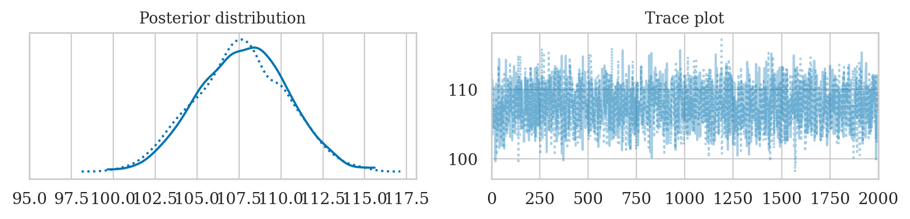
az.summary(idata2, kind="stats")
| mean | sd | hdi_3% | hdi_97% | |
|---|---|---|---|---|
| M | 107.686 | 2.715 | 102.473 | 112.583 |
az.summary(idata2, kind="diagnostics")
| mcse_mean | mcse_sd | ess_bulk | ess_tail | r_hat | |
|---|---|---|---|---|---|
| M | 0.058 | 0.041 | 2200.0 | 3035.0 | 1.0 |
Rank plot#
az.plot_rank(idata2);
{kind=link}
# FIGURES ONLY
with plt.rc_context({"figure.figsize":(5,2.7)}):
ax = az.plot_rank(idata2)
ax.set_title(None)
filename = os.path.join(DESTDIR, "example2_diagnostics_rank.pdf")
savefigure(plt.gcf(), filename)
Saved figure to figures/bayes/computations/example2_diagnostics_rank.pdf
Saved figure to figures/bayes/computations/example2_diagnostics_rank.png
{kind=link}
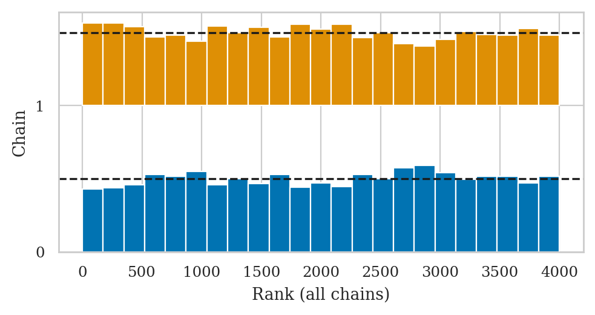
Bayesian workflow#
See also chp_09.ipynb
Prior predictive checks#
idata2_pri = mod2.prior_predictive(draws=50, random_seed=45)
az.plot_ppc(idata2_pri, group="prior");
{kind=link}
idata2_pri['prior']["mu"].shape
(1, 50, 30)
idata2_pri['prior_predictive']["iq"].shape
(1, 50, 30)
# FIGURES ONLY
with plt.rc_context({"figure.figsize":(4.5,2.3)}):
ax = az.plot_ppc(idata2_pri, group="prior", alpha=0.3);
ax.set_xlabel(None)
filename = os.path.join(DESTDIR, "example2_prior_predicive_checks.pdf")
savefigure(plt.gcf(), filename)
{kind=link}
Posterior predictive checks#
# Randomly sample 200 from all available posterior mean
# draws_subset = np.random.choice(idata2["posterior"]["draw"].values, 50, replace=False)
draws_subset = np.random.choice(2000, 50, replace=False)
idata2_rep = idata2.sel(draw=draws_subset)
mod2.predict(idata2_rep, kind="response")
az.plot_ppc(idata2_rep, group="posterior")
<Axes: xlabel='iq'>
{kind=link}
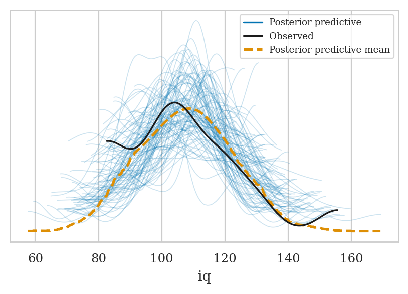
# FIGURES ONLY
import pymc as pm
np.random.seed(42)
selected_draws = np.random.choice(idata2["posterior"]["draw"].values, 50, replace=False)
idata2_rep = idata2.sel(draw=selected_draws)
# Sample from posterior predictive using a fixed seed to ensure repeatability
with mod2.backend.model:
idata2_rep = pm.sample_posterior_predictive(idata2_rep, random_seed=57)
# plot
with plt.rc_context({"figure.figsize":(4.5,2.3)}):
ax = az.plot_ppc(idata2_rep, group="posterior", random_seed=45);
ax.set_xlabel(None)
filename = os.path.join(DESTDIR, "example2_posterior_predicive_checks.pdf")
savefigure(plt.gcf(), filename)
Sampling: [iq]
Saved figure to figures/bayes/computations/example2_posterior_predicive_checks.pdf
Saved figure to figures/bayes/computations/example2_posterior_predicive_checks.png
{kind=link}
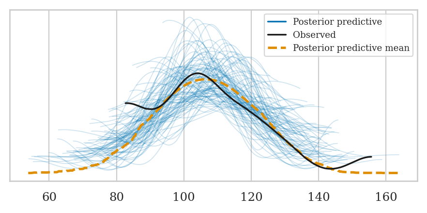
Fitting model to synthetic data#
np.random.seed(46)
from scipy.stats import norm
fakeiqs = norm(loc=110, scale=15).rvs(30)
fakeiqs = pd.DataFrame({"iq":fakeiqs})
fakeiqs["iq"].mean()
109.7132680142492
#######################################################
mod2f = bmb.Model(formula="iq ~ 1", family="gaussian",
priors=priors2, data=fakeiqs)
mod2f.set_alias({"Intercept": "M"})
idata2f = mod2f.fit()
Auto-assigning NUTS sampler...
Initializing NUTS using jitter+adapt_diag...
Multiprocess sampling (2 chains in 2 jobs)
NUTS: [M]
Sampling 2 chains for 1_000 tune and 1_000 draw iterations (2_000 + 2_000 draws total) took 1 seconds.
We recommend running at least 4 chains for robust computation of convergence diagnostics
print(az.summary(idata2f, kind="stats"))
mean sd hdi_3% hdi_97%
M 109.661 2.729 104.346 114.433
az.plot_posterior(idata2f, ref_val=110);
{kind=link}
# FIGURES ONLY
with plt.rc_context({"figure.figsize":(4.5,1.6)}):
ax = az.plot_posterior(idata2f, ref_val=110)
ax.set_title(None)
filename = os.path.join(DESTDIR, "example2_mod2f_synthetic_data_posterior.pdf")
savefigure(plt.gcf(), filename)
Saved figure to figures/bayes/computations/example2_mod2f_synthetic_data_posterior.pdf
Saved figure to figures/bayes/computations/example2_mod2f_synthetic_data_posterior.png
{kind=link}
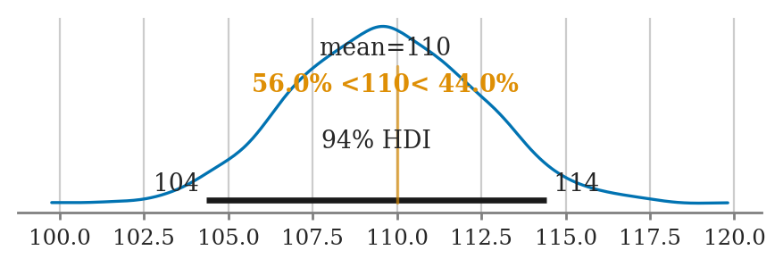
Sensitivity analysis#
# TODO: reproduce sensitivity analysis from Secion 5.1
Iterative model building#
Discussion#
Other types of priors#
Conjugate priors#
Uninformative priors#
Software for Bayesian inference#
Computational cost#
Reporting Bayesian results#
Model predictions (BONUS TOPIC)#
Coin toss predictions#
Let’s generate some observations form the posterior predictive distribution.
idata1_pred = idata1.copy()
# MAYBE: alt notation _rep instead of _pred ?
mod1.predict(idata1_pred, kind="response")
ctosses_pred = az.extract(idata1_pred,
group="posterior_predictive",
var_names="ctoss").values
numheads_pred = ctosses_pred.sum(axis=0)
sns.histplot(x=numheads_pred, bins=range(15,50));
{kind=link}
IQ predictions#
## Can't use Bambi predict because of issue
## https://github.com/bambinos/bambi/issues/850
# idata2_pred = mod2.predict(idata2, kind="response", inplace=False)
# preds2 = az.extract(idata2_pred, group="posterior", var_names="mu").values.flatten()
from scipy.stats import norm
sigma = 15 # known population standard deviation
iq_preds = []
np.random.seed(42)
for i in range(1000):
mu_post = np.random.choice(postM)
iq_pred = norm(loc=mu_post, scale=sigma).rvs(1)[0]
iq_preds.append(iq_pred)
sns.histplot(x=iq_preds);
{kind=link}
Exercises#
TODO: repeat exercises form Sec 5.1 using Bambi and ArviZ
Exercise A#
Reproduce the analysis of the IQ scores data from Example 2, but this time use a model with Bambi default priors.
a) Plot the priors using plot_priors.
b) Compute the posterior mean, std, and a 90% bci.
c) Compare your result in (b) to the results we obtained from Example 2.
mod2d = bmb.Model("iq ~ 1", family="gaussian", data=iqs)
mod2d.set_alias({"Intercept": "M"})
mod2d.build()
mod2d.plot_priors();
Sampling: [M, sigma]
{kind=link}
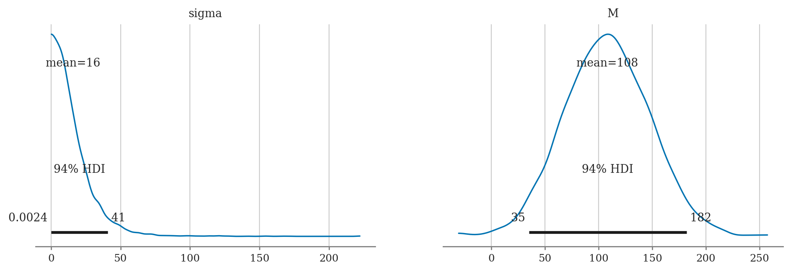
idata2d = mod2d.fit(draws=2000)
az.summary(idata2d, var_names="M", kind="stats", hdi_prob=0.9)
Auto-assigning NUTS sampler...
Initializing NUTS using jitter+adapt_diag...
Multiprocess sampling (2 chains in 2 jobs)
NUTS: [sigma, M]
Sampling 2 chains for 1_000 tune and 2_000 draw iterations (2_000 + 4_000 draws total) took 3 seconds.
We recommend running at least 4 chains for robust computation of convergence diagnostics
| mean | sd | hdi_5% | hdi_95% | |
|---|---|---|---|---|
| M | 107.741 | 2.956 | 103.082 | 112.651 |
az.summary(idata2, kind="stats", hdi_prob=0.9)
| mean | sd | hdi_5% | hdi_95% | |
|---|---|---|---|---|
| M | 107.686 | 2.715 | 103.297 | 112.194 |
az.plot_forest(data=[idata2, idata2d],
model_names=["Example 2 prior", "Default priors"],
var_names="M", combined=True, figsize=(7,2));
{kind=link}
Exercise B#
Repeat the analysis in Example 2,
but this time use the exponential prior \(\text{Expon}(\lambda=0.1)\)
on the parameter sigma. Calculate:
a) Plot the priors using plot_priors.
b) Compute posterior mean of M and sigma.
c) Compute the posterior median of M and sigma.
d) Compute 90% credible interval for M and sigma.
import bambi as bmb
priors2e = {
"Intercept": bmb.Prior("Normal", mu=100, sigma=40),
"sigma": bmb.Prior("Exponential", lam=0.1),
}
mod2e = bmb.Model(formula="iq ~ 1",
family="gaussian",
link="identity",
priors=priors2e,
data=iqs)
mod2e.set_alias({"Intercept": "M"})
mod2e.build()
mod2e.plot_priors();
Sampling: [M, sigma]
{kind=link}
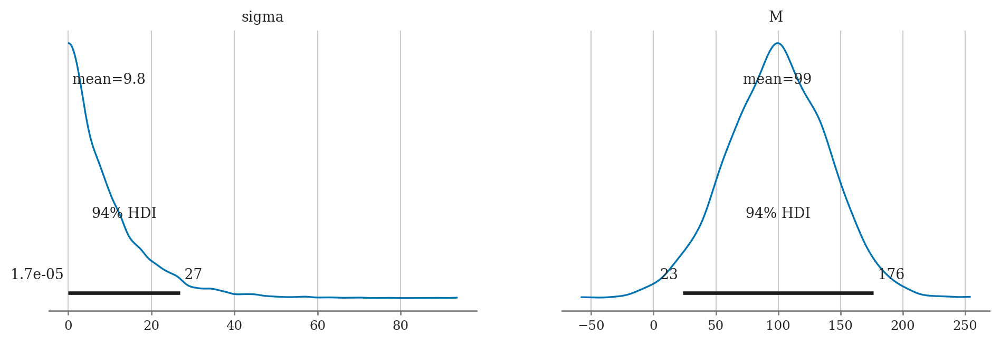
# idata2e = mod2e.fit()
# az.plot_posterior(idata2e)
# JOINT PLOT
# M_samples = idata2e.posterior['M'].values.flatten()
# sigma_samples = idata2e.posterior['sigma'].values.flatten()
# sns.kdeplot(x=M_samples, y=sigma_samples, fill=True)
# plt.xlabel('M')
# plt.ylabel('Sigma')
# plt.title('Density Plot of Mean vs Sigma')
Exercise C#
Links#
TODO
mod1.prior_predictive()
Sampling: [P, ctoss]
-
<xarray.Dataset> Size: 208kB Dimensions: (chain: 1, draw: 500, __obs__: 50) Coordinates: * chain (chain) int64 8B 0 * draw (draw) int64 4kB 0 1 2 3 4 5 6 7 ... 493 494 495 496 497 498 499 * __obs__ (__obs__) int64 400B 0 1 2 3 4 5 6 7 8 ... 42 43 44 45 46 47 48 49 Data variables: P (chain, draw) float64 4kB 0.1643 0.3995 0.1617 ... 0.7209 0.4924 p (chain, draw, __obs__) float64 200kB 0.1643 0.1643 ... 0.4924 Attributes: created_at: 2024-11-23T01:40:59.040888+00:00 arviz_version: 0.20.0 inference_library: pymc inference_library_version: 5.18.2 modeling_interface: bambi modeling_interface_version: 0.14.1.dev12+g3a30784 -
<xarray.Dataset> Size: 204kB Dimensions: (chain: 1, draw: 500, __obs__: 50) Coordinates: * chain (chain) int64 8B 0 * draw (draw) int64 4kB 0 1 2 3 4 5 6 7 ... 493 494 495 496 497 498 499 * __obs__ (__obs__) int64 400B 0 1 2 3 4 5 6 7 8 ... 42 43 44 45 46 47 48 49 Data variables: ctoss (chain, draw, __obs__) int64 200kB 0 0 0 1 0 0 0 ... 0 1 1 1 0 1 0 Attributes: created_at: 2024-11-23T01:40:59.043033+00:00 arviz_version: 0.20.0 inference_library: pymc inference_library_version: 5.18.2 modeling_interface: bambi modeling_interface_version: 0.14.1.dev12+g3a30784 -
<xarray.Dataset> Size: 800B Dimensions: (__obs__: 50) Coordinates: * __obs__ (__obs__) int64 400B 0 1 2 3 4 5 6 7 8 ... 42 43 44 45 46 47 48 49 Data variables: ctoss (__obs__) int64 400B 1 1 0 0 1 0 1 1 1 1 1 ... 0 1 0 1 0 1 0 1 1 0 Attributes: created_at: 2024-11-23T01:40:59.044159+00:00 arviz_version: 0.20.0 inference_library: pymc inference_library_version: 5.18.2 modeling_interface: bambi modeling_interface_version: 0.14.1.dev12+g3a30784